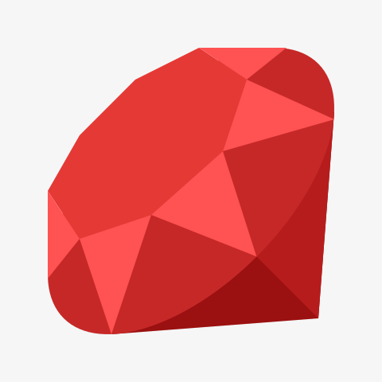

Python
Language has high readability, easy to understand
Good at scientific computing and machine learning as well

Java
Mobile app to large-scale development
Language can be used for various purpose
Ruby
Intuitive, high productivity
Mainly used for web application development
